警官叫来服务员，给自己点了大麦啤酒，又给他的朋友点了一小瓶“那玩意”。然后诡秘地把身子靠了过来。
“你可曾发现过，或者听说过分子吗？”他问道。
“当然了。”
“那你要是知道分子理论正在达尔基区横行，会不会感到很惊讶？”
“嗯……大概吧。”
“它正在肆虐，”他接着说道，“有一半的人都受到了侵袭，简直比天花还糟。”
“难道不能让医生或者教师来解决吗？还是你觉得这应该是各家当家人的责任？”
“这从头到尾，完完全全，都是郡议会的事！”他言语颇为激烈。
“看来真是个麻烦。”
关于分子短而又短的简介其实早就有人写过了，而且写得比我远为巧妙。弗兰·奥布赖恩 注 总喜欢伴着一杯浓烈的健力士啤酒 注 来给我们端出他的博学，仿佛是在谈论土豆田或是都柏林市郊糟糕的路况。在都柏林主干道上的大都会酒店，福特雷警官正在和米克分享他的智慧，而我们也能从中收获些东西：
“你年轻的时候研究过分子理论吗？”他问道。米克说没有，没怎么研究过。
“这玩意可真是肆无忌惮、变本加厉，”他严肃地讲，“不过还是让我来告诉你它有多严重。一切事物都是由事物自身的那种小小的分子所组成的，这些分子飞来飞去，有转圆圈的，有绕弧线的，有直着飞的，轨迹各种各样，无穷无尽。它们从来都不会停着不动，而总是不断地转来转去，到处乱闯，一刻都没停过。你明白了吗？这样的分子？”
“我觉得算明白了。”
“这就像是20只活蹦乱跳的小妖精在平整的墓石上上蹿下跳。用羊来打个比方。究竟羊是什么东西呢？其实，所谓羊，只不过是数以百万计的微小的羊分子在身体里转来转去、上下翻飞而已。”
究竟羊是什么东西呢？这个貌似简单（在一层层的伪装之下）的问题却足以让科学家困惑数百年之久，而且还会在未来的很长时间里继续让他们困惑下去。分子科学给出了一种分层次的回答：这种科学所考虑的就是那“组成羊的数以百万计的某种微小的羊质”，亦即分子。一只羊是很多种分子组成的混合物，实际上包含着数万种不同的分子。其中的很多种分子不仅包含在羊里面，在人身体里、在青草中，甚至在天空和大海中也都能找到。
但科学不能仅停留于此，而要寻求更深层的理解。羊的分子不又是由原子组成的吗？原子不又是由电子、质子等亚原子粒子组成的吗？而这些亚原子粒子不又是由夸克、胶子这些亚亚原子粒子所组成的吗？到底该说包含谁才算到了尽头呢？
“分子理论是一种可以通过代数计算出来的、非常纷繁复杂的理论，不过也许你喜欢用角度、直尺、余弦等一些熟悉的工具来求解，解了半天你自己都不相信自己到底证明了什么东西。这个时候你就得回过头再不断地检查错误、重新求解，直到相信你发现的事实与霍尔和奈特《大代数》的内容一样清楚明白，这时候再继续向前，直到你确切地全盘相信了整个事实，里面没有一丁点儿是半信半疑、像床上掉了衬衫领扣那样让你头疼的。”
“非常正确。”米克决定这么回答。
实际上，求解出分子是什么，是一项十分繁复的工作，这需要你从科学阶梯上较低（也许该说较深）的几层出发，一级一级向上攀爬。要想完完全全理解分子的行为特点，以及怎样通过分子来诠释物质——羊、石头、一扇窗子玻璃，解释它们为何呈现出各个方面的性质和特征，就必须懂得求解分子。不过对于很多跟分子打交道的科学家来说，大可不必跟代数扯上关系，因为这些代数大体能归结为几条分子间如何相互作用的经验法则。早在化学的数学基础完善之前，化工就已经是一个欣欣向荣的产业了。这也说明其实分子并不一定会让你头疼。
后来弗兰·奥布赖恩修改《达尔基档案》中福特雷警官与米克的对话，并写入著名小说《第三个警察》，这本书在他逝世后的1966年才出版。奇怪的是，他把原来的“分子理论”全部替换成了“原子理论”。这就涉及事物究竟由何组成这个颇为模棱两可的问题。到底是原子还是分子呢？化学家给出的是复合的回答，说两者皆可。他们使用的标志性暗号是元素周期表。这是个由92种天然元素（补充上一些不稳定的人造元素）通过某种化学家易于理解的模式排成的列表。“关于”化学的最著名的一本书可能是意大利化学家兼作家普里莫·莱维所写的，那本书就以这个物质基础材料的列表“周期表”而命名；它强化了人们的印象，觉得化学就该是从这个由各种符号组成的不规则表格出发。在我上中学的时候，老师就教过一种诀窍来巧记最重要的前两行元素。化学专业的本科生则要求背诵整个元素周期表，要知道铱在钴的下面，铕在钐和钆的中间。不过我很怀疑我到底有没有机会在钐身上多停留一眼（不过铕倒是会在电视机屏幕的红光中朝我们闪烁）。
在我们呼吸的空气里有所谓惰性气体。它们有奇怪的希腊名字，博学的字源，意指“新”“隐”“怠惰”“奇异”。它们真的是很迟钝，对现状极为满意。它们不参加任何化学反应，不与任何元素结合，因此几世纪都没被发现。直到1962年，一个努力的化学家，绞尽脑汁，成功地迫使“奇异”（氙气）和最强悍的氟结合。由于这功夫非常了不起，他因而得了诺贝尔奖……
钠是一种退化的金属。它的金属意义是化学方面的，不是一般语言指的金属。它既不硬也不韧；它软得像蜡，它不光不亮。除非你拼了命照顾它，不然它立刻和空气作用，使表面盖上一层丑陋的外壳；它和水反应更快，它浮在（一种会浮的金属！）水面跳舞，放出氢气……
我称了一克的糖放到白金坩埚（大宝贝）里，在火上加热。先是一阵来自焦糖的家庭气味和孩子气味，但接着火焰变成蓝灰色，气味也不一样，是金属的、无机的（事实上，是反有机的）气味—— 一个化学家没有嗅觉就麻烦了。至此，不太可能弄错了：过滤它，酸化它，用启普发生器产生硫化氢通过溶液。我们得到黄色的硫化砷沉淀。一句话，这里面有很毒的砷，故事中米特拉达梯 注 和包法利夫人服食的那个砷。
普里莫·莱维，《元素周期表》（1975）
但其实化学只是偶尔才关注元素的性质，分子科学即便做不到无视大多数元素，也可以忽略其中的许多。只有在化学中极其靠近物理学的那一部分领域中，元素周期表的作用才真正显现出来，这时我们就必须拿出代数和余弦来解释为何各种元素的原子能够组成称作分子的特定结合体。周期表是19世纪一项美妙而深刻的发现，但在物理学家于20世纪创造量子力学之前，周期表也只能被当成一种神奇的密码，一种写着经验法则的小抄，提醒人们元素是分成一族一族的，同族元素有着相似的癖性。
我大概太过迅速地省略掉了元素周期表。我至少还应该再交代一下历史才对。
传统的化学史会讲，化学就是人们为理解物质进行的探索，去追问事物到底由何构成。这就将化学与古希腊哲学联系在了一起，其中就包括公元前5和前4世纪之间，留基伯和他的学生德谟克利特提出的原子构成物质的理论。化学史的这种讲述从恩培多克勒四元素说（土、气、火、水）开始，讲到柏拉图将元素理论与原子论相结合（如图1），小心翼翼地绕过中世纪炼金术士炼化物质的迷梦，谨小慎微地落到18世纪的燃素说上。然后，我们会看到1661年罗伯特·玻意耳重新定义了元素的概念（其实也未必能全然算作“重新定义”），看到老古董的四元素说在新发现的“不可分物质”前轰然崩塌；看到安托万·拉瓦锡摧毁了燃素说并用氧气取而代之，之后又于1794年在断头台上掉了脑袋。约翰·道耳顿在1800年提出了现代的原子理论，在这个世纪中元素的列表急剧扩张，接下来就由德米特里·门捷列夫将它们组织成双子座大厦形的元素周期表。铀之前空缺的部分又被逐步填满（铀元素本身在1789年就已经被发现了），随后沃尔夫冈·泡利及其他量子物理学家在1920年代解释了为何周期表呈现这种形状。
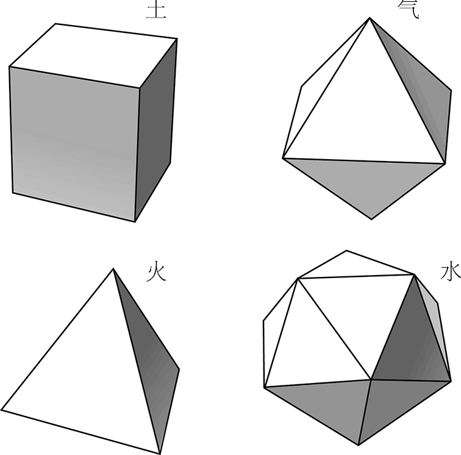
那么这项任务也就到此为止了。按照科学作家约翰·霍根在《科学的终结》中所写的，一旦盖上了量子力学的认证戳，就意味着化学也走到了尽头。最近又有几本关于未来科学的书暗示，化学这门学科正在从两端被侵蚀，它自己却很醒目地在学科变化中缺席了。从最基础的一侧看，化学正在朝物理学演变（包括庞大却一直被忽视的凝聚态物理这个分支，它研究的正是有形物质的行为）。从较复杂的一侧看，它又变成了生物学，生物学家正在扩大自己的地盘，研究细胞的分子机理。
但是，这些学术领域争夺地盘的战争，其背后的事实要有趣得多。有个奇怪的现象值得注意：很多科学史都是由物理学家撰写的，他们倾向于将科学讲述成一系列提出问题、回答问题的过程。而工程师讲的故事可能会更有启发。凭借工程师的直觉，他们可能更倾向于问我们有可能造出什么。一部分原始化学家希望形而下地或形而上地切分物质，其他的化学家则更热衷于对物质进行重组。正因如此，分子科学的目标既是创造性的又是分析性的。在历史上的不同时期，分子科学曾经分别关注过制造陶器、染料和颜料、塑料及其他合成材料、药物、防护涂层、电子元件以及细菌大小的机器。诺贝尔化学奖得主罗阿尔德·霍夫曼曾说：“化学家何以要接受别人对‘发现’的定义，这真是非常奇怪。”他继续讲道：
化学是关于分子及其变形的科学。有的分子本来就在那里 ，只是等着我们去认识而已……但还有更多其他的分子只是我们化学家在实验室里造出来的……［化学的］核心就是造出来的分子，无论是通过自然过程还是通过人工手段制造。
有些大学将化学系藏在了“分子科学”这样的名号之下，他们的想法可能是对的，因为这样其实是温和地将周期表这个重担丢掉，把化学家解放出来，投入到合成的世界中。这里不再是柏拉图的王国，在这里，人们设计、制造分子就是为了去做点 什么，比如去治愈病毒感染、储存信息、固定桥梁。
普里莫·莱维是一位工业化学家，他正是工作在这个合成的世界。他对这套分子科学感到一丝歉疚：他称这种科学为“‘低级的’化学，简直像烹饪”。但“低级”化学的威力可不容小觑。它每年撬动数十亿美金的流动，它能给患病的人带来健康，能给健康的人带来疾病。汉堡和德累斯顿曾因低级的化学而化为焦土，今天在西方，人们对化学战争和生化战争的恐惧比对核武器更甚。很多人以为核弹纯粹是物理学的产物，可是写下E =mc 2 并不能毁灭广岛，只有用铀的化合物进行同位素分离才可以。在《万有引力之虹》中，托马斯·品钦清楚地知道科学的真正威力何在：他小说中二战以后的反派并不是原子弹，而是一种新型塑料，一种称作“G型仿聚合物”的“芳族杂环高分子”，由欧洲化工巨头，包括法本 注 、汽巴 注 、嘉基 注 、壳牌石油 注 和帝国化工 注 合谋制造。这告诉我们的信息是，“实物”胜于 理论。 注
这是否意味着分子科学是坏的呢？当然不是。这只不过说明，分子科学充满了可能性：有精彩的可能，创新的可能，也有低劣的可能，噩梦的可能。有通俗而常用的事物，有奇特而少见的事物，还有人们难以理解的事物。在未来，分子科学或许能够帮助人们长出一只新的肝脏。在过去，拉斐尔、鲁本斯、雷诺阿用分子作画。而生命的本原，更是分子谱写的一曲颂歌。
G型仿聚合物的起源可以追溯到杜邦进行的早期研究。塑料业有其悠久的传统和主流，碰巧流过了杜邦及其著名的、被人们称为“伟大的合成化学家”的工作人员卡罗瑟斯。他对大分子进行的有关研究贯穿了整个20年代，直接为我们带来了尼龙。这东西不仅使拜物教徒们欣喜万分，也为武装暴乱分子们提供了方便。同时，在圈子内部，还宣告了塑料业的一个核心信条：化学家们再也不受自然摆布了，他们现在可以决定分子有什么样的特性，然后着手制造这样的分子……这样，就可以合成出一种高分子量的单体，弯曲成杂环，拴牢，和更“天然”的苯环或芳环相串成链。这种分子链就是“芳族杂环高分子”。雅夫在二战前夕作为假想提出的一种分子链后来得到改进，成为G型仿聚合物。
托马斯·品钦，《万有引力之虹》（1973）
那么，一切事物都是由分子组成的吗？并不尽然。一切事物都是由原子组成的（暂不考虑某些奇怪的太空环境），而原子并非总是结合成分子。（我也说不清弗兰·奥布赖恩把“分子”改写成“原子”是因为他懂得还是不懂这其中的区别。）大多数原子本身是非常活跃的，它们天生就喜欢和别的原子结合在一起。分子就是若干原子紧密聚集在一起，分子里可以含数量多达好几百万的原子。
不过进一步来看，还有些细微的区别要加以说明。弗兰·奥布赖恩作品里的福特雷警官提到了石头“分子”和铁“分子”。但严格说来，其实并没有这种东西——至少日常的石块或者铁块里是没有这种分子的。所谓“分子”，我们一般指的是若干数得清数目的原子所聚成的分立的一团。比如在一个水分子里就有三个原子：两个氢原子和一个氧原子。一杯水里有数以万亿计的原子，但如果给这液体拍些瞬时快照（假设能看清微观细节），我们就能看到，在每个瞬间，所有原子都是三个三个聚成一团的，就像是一大群人挤在一起，可每家三个人都一直手拉手（如图2a）。
而铁的原子却并不聚成分立的分子。它们如有序的炮弹般堆积，像行列整齐的队伍。我们无法从这一大堆原子中辨认出某个小团，因为每个原子都与周围的原子间距相等。由氯原子和钠原子所组成的氯化钠晶体（即食盐，如图2b）同样如此。当铁熔化时，原子之间就会你推我搡，像混乱的人群。而当冰溶化时，氢原子和氧原子依然三个一团地手拉着手，整个晶体却分崩离析了。我们讲，冰是分子晶体——原子以分子的形式聚合在一起，而铁和岩盐则不是。
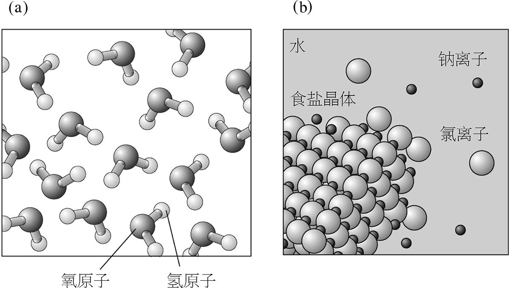
有的单质以分子的形式存在，有的不是。作为一条粗略的经验法则，铁之类的金属都不是分子，而非金属则是分子。比如，固体形式的氮就由双原子的分子组成。磷原子会四个结成一团，而硫原子则会八个结成一个环状分子。我们无法只看上物质一眼就知道它的基本单元究竟是原子还是原子聚成的分子，这似乎难以接受，但没办法就是没办法。（还好科学家要找到答案并不太难。）
因此，“分子”其实是个比较灵活而松散的概念，本质上是个尺度的问题。那么，我们为什么要多此一举考虑分子，而不是直接谈论一般化的“物质”呢？我给出的理由是这样的：分子是具备化学意义 的最小单元。在亚微观的世界里发生的故事要通过分子，而不是原子来讲述。分子是单词，而原子只不过是字母。尽管有些时候一个字母就是一个单词，但大多数单词都是若干字母按特定次序组成的分立团体。我们常常发现，比较长的单词能够传达更细致、更微妙的含义。在分子中，各个组成部分的次序也至关重要，就像“save”和“vase”含义不同一样。
分子所讲述出来的最奇妙的故事发生在生命有机体中。但很遗憾，这样的故事往往很难懂：很多单词很长、很陌生，我们对语法的掌握也很粗浅。化学家总在不断地创造出新的分子单词来扩展语言，其中有些新词还是非常巧妙的。一旦具备了某些新词，我们就能讲好以前一直不能讲的故事。还有的时候，一个新词能让我们用简单的方式来表达以前绕来绕去才能讲清的事情。
我们用语言来对分子的世界打了个比方，这个比方相当贴切。如今我们经常听到“基因的语言”，我希望让你知道，这只是分子所编码的语言中的一种。语言甚至还不只是个比喻。分子正和语言一样是切实包含着“信息”的，这一点我将在第七章中讲到。
不仅如此，语言比方的好处还在于，利用这种信息的范式来描绘分子科学具有独特的价值，它是一种会话式、应答式的描述，而不是以前那种被奉为圭臬的机械式描述。细胞生物学家越来越多地提到蛋白质分子间相互“交谈”。关注物质科学的物理学家则会讲到“合作”行为与“集体”行为。这并不是为了使科学显得更友好而刻意造出的模糊朦胧、罗曼蒂克的概念（不过若确实有这种效果也无伤大雅）。人们这样讲，正是因为他们越来越多地注意到，分子行为具有美妙的复杂性，且一般是群体性的行为，很少是单纯的线性。
考虑到这些理由，我需要在分子科学中扩大比喻的使用范围。即便是在专家之间相互交谈的层面上，我们也无法丢掉比喻。科学中很多领域都是如此，而化学尤甚。分子常常会被毫不留情地拟人化，这样做无可厚非，毕竟分子是很陌生的事物，我们需要找些办法让它们变得不那么陌生。我曾经写了本关于水的书，出版商明智地坚持让我不要引入H2 O分子的球棍模型，否则就是在刁难读者，让他们把书束之高阁。可是，如果不介绍水的分子结构，我就无法解释水的奇异特点，所以我就把这些分子变成了一些小妖怪（如图3）。
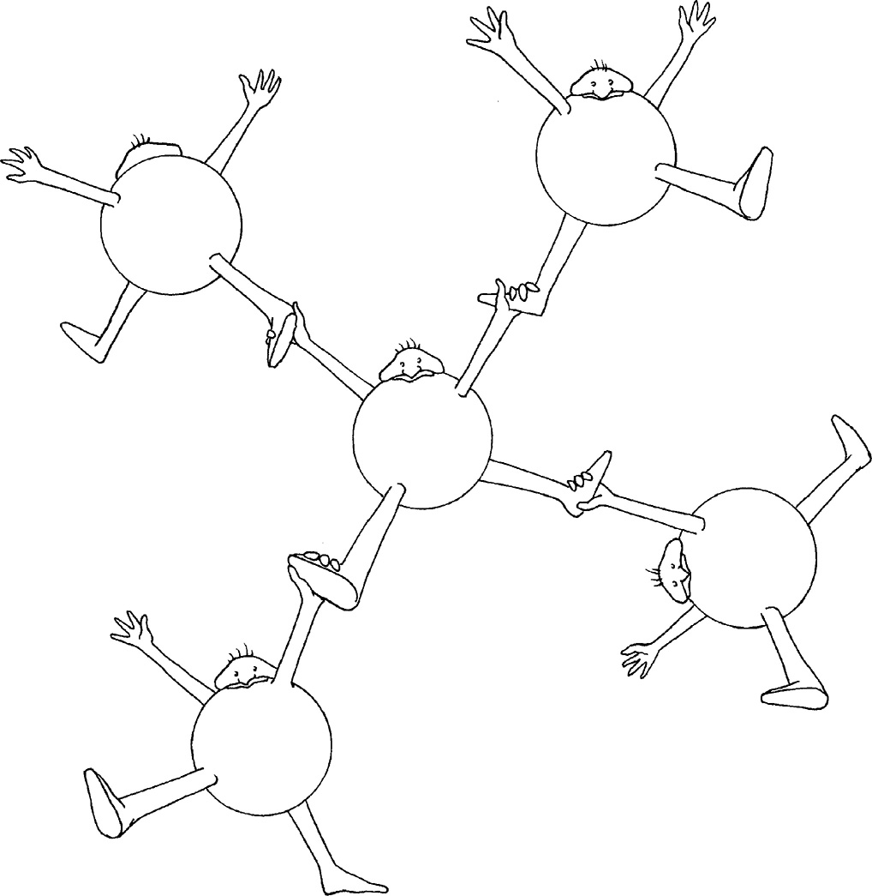
我希望这样做不会有什么害处。但我最近出席一场关于分子复制的公众讲座的经历提醒了我其中的危险之处。当时听众提的第一个问题是：“这些分子有意识吗？”鉴于演讲所介绍的是一种合成分子系统在模仿（非常粗糙地）某些生命有机体的特征，我觉得提出这个问题是可以理解的。我坚信答案是“没有”。尽管意识的概念很难把握，但基于任何对意识的切实有意义的定义，这些分子都不能算具有意识。可是，一旦我们将分子拟人化，不论结果是好是坏，我们都把意识的联系强加上去了。很多人厌恶“自私的基因”这种概念，因为它把道德判断强加其上。（理查德·道金斯称之为“诗意的科学”，我也能明白他的意思。然而，严谨的机理虽能表现成诗歌，却会被比喻的感情色彩所污染。）分子间“合作”与“交流”的想法并不能成为自然哲学的基础。不过也说不好，在分子科学中，未来或许会有某种简单、规则、有序的世界观，于是我们这些人看起来可能正像是从地心说出发解释天体运动的古代天文学家那样，强行将观察现象塞入错误的理论框架中。
普里莫·莱维的《猴子的扳手》是我所能想到的少数几部包含分子图示的小说之一（如图4）。这个分子很复杂，看上去很吓人。要是我想写本关于科学的非技术性图书，而且想给读者提供一些教益，那我做梦也不会在书里插这么一幅图的。
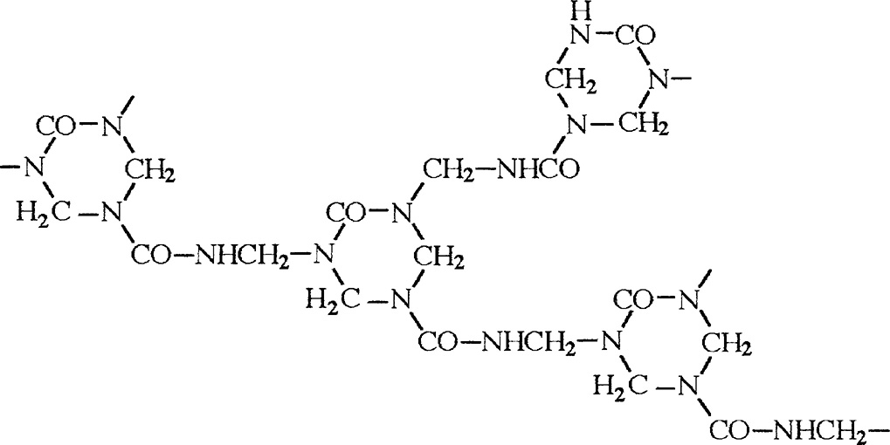
莱维避开了这个难题，因为他并不想让我们了解这个分子的任何事情，除了一点——该分子有形状和结构。分子里有一些六边形，又有一些直线将六边形连接在一起。讲述者和一个名叫福索内的负责将大梁组装到桥上的建筑工人交谈。他说：
我在学校里所学习的专业也就是现在用来谋生的职业，是化学。不知道你是不是了解，不过这其实跟你的工作有点儿像，只不过我们拆装的是非常微小的结构……我一直都是个装配化学家，也就是做合成，换句话说就是把结构排出一定的秩序。
我们在这本书中遇到的分子的例子，可以视作微型雕像、集装箱、足球、丝线、圆环、杆子、钩子，它们都是由原子聚合在一起形成的。柏拉图相信原子有“正多面体”的形状：立方体、四面体、八面体等。这是错的， 注 但化学家倒是能够把原子组成这些形状的分子。
那么，莱维故事中的讲述者对福索内画的这个分子到底有多大呢？图中的每个C、N之类的字母各表示一个原子，这些原子确实很微小。很多人用过很多比方来说明原子的尺度，不过我不确定这样能不能在“这种元素的不可分解的微粒真的特别特别小”以外让你留下更具体的印象。我们也打个比方：把一个高尔夫球放大成地球那么大，那么高尔夫球里的原子就像原来的高尔夫球那么大。一千万个碳原子一个挨一个地连起来，能连成一毫米长。
水分子之类的小分子，大小只有几个原子大，约为十分之三纳米（一纳米是一毫米的一百万分之一）。普里莫·莱维的分子则比这要大上几倍。（无法确切地讲究竟大几倍，因为他画出的只是分子的一个片段，它会沿图中左右两个方向不断延伸。）
分子尺度如此之小的后果之一是，分子世界里事情发生得非常快。当我们听说分子每秒能转一百亿圈时，我们大概会以为它们自转速度高得不可思议。可实际上分子实在太小了，即便以中等速度移动，也能在一瞬间就飞过分子尺度的距离。如果氧气分子要每秒转一百亿圈，那只需以每秒一米的速度运动就够了。
把原子连接在一起的小棍情形如何呢？实际上它们并不占据任何空间，而只是一种辅助我们理解图示的习惯而已。原子结合成分子时就完全挤在一起，其实相互间还会重叠，就像是两个接触的肥皂泡。这之所以可能，是因为原子并不像坚硬的台球，而更像橡皮球。它们有个坚硬且密集的中心，称为原子核。原子核大约比原子本身小一万倍，但原子的质量却主要集中在原子核上。原子核带正电荷，围绕着原子核的是一团云雾状的电子，它是带负电荷的小而轻的亚原子粒子。两个原子各自的电子云可以重叠在一起，而不致撞车，于是它们共享了一部分电子：两团云雾融合成一团，围绕着两个原子核运动。当这种情况发生时，我们就称两个原子通过共价键 结合。上一幅分子结构图中的短线就代表共价键，这仅仅是一种辅助表示哪两个原子相互连接的办法。
谈论分子时，有一点思想至关重要，可它又不免使问题复杂化。这就是：并没有画出分子的“最佳”方式。有人可能会说：不要管结构图了，为什么不直接画出它们“真实”的样子呢？但这办不到，因为我们无法像给猫或树照相那样去给分子照相。这不是技术水平局限的问题，不是因为我们缺一台能分辨如此微小物体的显微镜或照相机，而是因为“看”的机制本身就不允许我们“看”一个分子（或一个原子）“本来的面目”。
原因是我们只能够看到可见光，可见光是波状的辐射，它的波长（相邻两个波峰间的距离）范围是从700纳米左右的红色光到400纳米左右的紫色光。换句话说，一厘米内包含有约14万个红光的波形。这样的波长是分子大小的好几百倍。大致说来，光不可能聚焦到一个小于其波长的点上，也就是说那么小的物体是无法被可见光分辨的。 注 因此，基于可见光的显微镜是不可能给出水分子的清晰图像的。
我怀疑这可能是人们认为分子难以理解的原因之一，也是为什么像前面那样的结构图能让科学图书吓跑读者的原因。这种东西不仅小得看不见，而且小得都不可以“看”了，还要具体地谈论它岂不荒唐？看不见的东西就有种迷幻的气质，好像只是杜撰而已。
不过分子可不是杜撰，我们不仅能够证明它们存在，还能证明它们有确切的形状和大小。图5给出了一些分子的“肖像”，是通过一种非光学显微镜所成的像。每幅图边上我都附上了分子结构图。早在这种显微镜发明之前，人们就已经知道这些分子是这样的结构了，但从没有人能够直接看到它们。这些图像挺模糊的，单从这些图像入手，你没法猜出分子的准确形状。但显微镜下显示的形状与我们所预期的完全一致，非常令人信服。
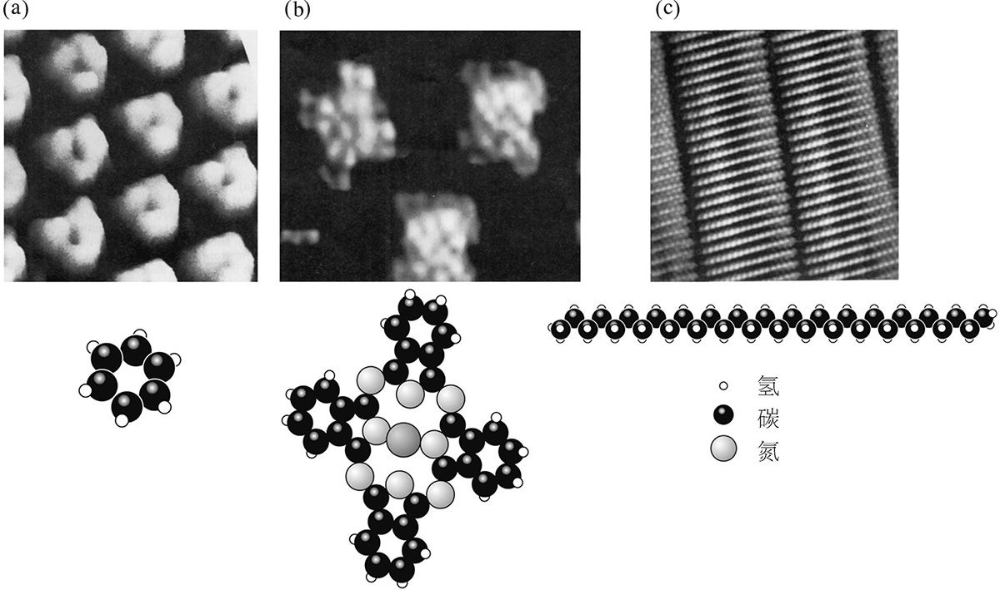
在照片拍摄以前，我们又是怎么知道这些分子的形状的呢？从实验中能够得到一些确凿的证据。尽管分子实在太小，无法被可见光分辨，我们仍然可以通过波长与分子大小相当的辐射来“看到”它们。波长约十分之一纳米的辐射属于X光，通过让X光在晶体表面反射，就有可能推断出构成它们的原子处在什么位置上。也就是说，如果物质可以制成结晶态，使分子有规律地堆积在一起，那么使用这种名为“X射线晶体学”的技术手段就可以揭示分子的结构。
原则上我们可以用X光看见单个的分子，只要像光学显微镜汇聚可见光那样将X光汇聚起来就可以了。但实践中要聚焦X光十分困难，现在仍无法做到，不过科学家们几乎快要实现它了。同时，我们还可以使用电子显微镜，即将一束电子打到样品上反射，并进行汇聚，得到图像。电子也可以表现得像波一样。利用电子波，蛋白质或者DNA（脱氧核糖核酸）等大分子的图像我们也能构建出来。这些图像的细节不够充分，不足以显示出单个的原子，但能让我们对分子整体的形状留下印象。
另一种推断分子形状的方法则是理论的方法：我们是有可能计算出它们的。这就要涉及弗兰·奥布赖恩讲“分子理论”提到的“代数”，不过在此没必要细讲。只需要了解，量子力学 注 的定律能够使我们预测原子间如何成键，及原子相互位置如何。原子是不能随心所欲地结合的。比如，各种元素的原子都倾向于形成固定数量的化学键，这个数就称为它的化合价。碳原子喜欢成四个键，氢原子喜欢成一个键，氧原子则成两个键。
分子结构的量子理论确实是一种“非常纷繁复杂的理论”，即使用最好的计算机也只能近似地求解方程。但现在，我们对中等大小分子结构的求解已经能够达到相当的可信度。计算预测结果与X射线晶体学测定的分子结构进行比较，常常高度吻合。不过要预测生物细胞中发现的诸多大分子的形状，我们还没有可靠的办法。这种情况下，X射线晶体学也很困难，原因有二：一是因为这些分子晶体散射出来的X射线图样很难解读，二是因为很多时候这种分子无法形成晶体。所以细胞中充满了我们不知道其形状的分子。
分子的形状正是它如何行为的关键因素，所以我们要理解生命分子如何工作就遇到了很大的障碍。把一位设计师的格言倒过来讲就是——“功能服从于形式”。
总之，分子科学是一种高度可视化的科学。化学家花了两百多年发展出一套描述这些分子的图形化语言，结果他们现在必须讲多种语言。描绘分子有多种方法，不同方法各有其侧重点，着重表现描述者想强调的方面。英国化学家约翰·道耳顿从1800年开始把分子画成原子的集合，而用圆圈符号表示原子，每个圆圈有阴影或标记，用来区分不同的元素。一旦知道了对应关系，这种表示法就很清楚了（如图6）。
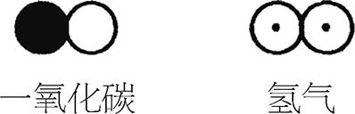
这方法不错，不过对印刷工来讲可不轻松，他们得专门补充上这些符号。一种更简洁的办法是用一到两个字母符号来表示不同元素：C表示碳（carbon），O表示氧（oxygen），Ca表示钙（calcium），Fe表示铁（iron）。（甚至到19世纪时，化学家仍然将这种金属记作拉丁文的ferrum 。同样的原因，金和银分别称作aurum 和argentum ，于是用Au和Ag表示。Ir不表示铁元素而表示铱元素。不过至少创制之时人们是希望 这套体系不言自明的。）
于是，一氧化碳就可以简记为CO。相同元素的多个原子可以用下标表示，于是氢气分子就是H2 。
但这套方案并没有给各个分子以独一无二的表示。甲醚和乙醇是不同物质，性质不同，但它们的化学式 都表示为C2 H6 O。我们又回到了之前的那个词汇学问题：一个词语的意义不仅由它包含什么字母决定，也由字母的排列顺序决定。
所以我们还需要某种新形式，它能够表示出原子间如何相互连接。这时候字母间的短线就来了，它表示化学键。C2 H6 O的两个版本——称为两种同分异构体 （组成原子相同，排列顺序不同）——可以表示成如下的样子：
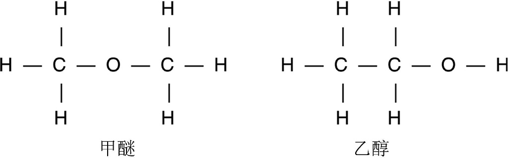
更加复杂的情况是，分子不是纸面一般的二维形式，而是会占用整个三维的空间。
表示第三个维度有几种不同方法，有了计算机图形学的出现，我们的方法更显精巧了。图7所示是对中等大小分子的一种立体表示法：将两只眼的图像重叠，就可以看到3D形状。
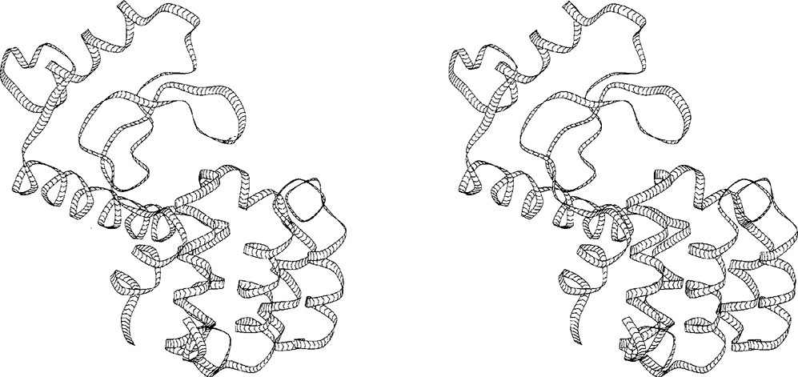
化学家设想出来的办法远不止这些。有时我们还需要“空间填充模型”来表示分子占据了多大的空间（如图8a）。有时则大体的模式图最为有用，这时就不用表示出不必要的细节（如图8b）。
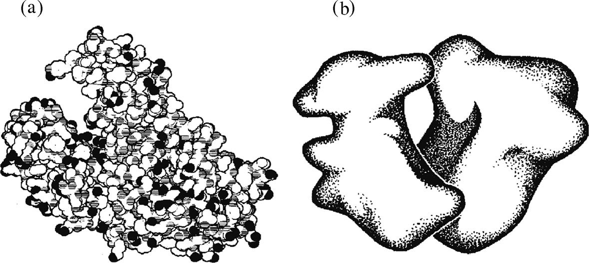
图8所示的分子是生物分子，细胞的组织巧夺天工地组装起神奇的结构，每一个原子的位置都分毫不差。化学家还达不到这样高水平的技艺，所以大自然常常占据上风。我们能造出杀死致病菌的分子、消灭病毒的分子以及摧毁癌细胞的分子，但它们开展工作常常很粗暴。它们常能发挥惊人的功效，但同时也可能会在作用过程中破坏健康的细胞；要不然就是入侵的有机体很快找到办法魔高一丈，比如细菌逐渐演变出对抗生素的免疫力。不过化学家制造分子的手艺越来越精湛，进展迅猛，也许有一天，造出保证有效且全无副作用的药品就不再是梦了。
普里莫·莱维这样写道：
认真说来，其实我们是很糟糕的装配工。我们就像笨拙的大象，别人给了一个封闭的盒子，里面装着一只手表的所有零件。我们很健壮，很有耐心，于是就拿着盒子用尽全力朝各种方向使劲摇啊摇。我们也可能会给盒子加加热，因为加热也算是另一种形式的摇晃。呵，有时如果手表不算太复杂，只要我们不停地摇，那迟早能把手表组装到一起……
这其实是最糟糕的情景。莱维是在1978年写的这段话，自那以后情况有了长足的发展。可是直到20世纪后一二十年，莱维所描述的方法——化学家愿意称之为“颠热锅”——时常也只是他们能用的最好办法。合成化学的主要工作就是专注于制造所谓的“有机分子”，这意味着分子包含主要由碳原子构成的骨架。到现在为止我所描述的大多数分子都是人们认为的有机分子。在甲醚和乙醇分子中，碳骨架非常小。但对于普里莫·莱维的分子而言（第15页），它的骨架就比较复杂了。你还能看到，氮原子在它的骨架中也占有一席之地，而甲醚分子中的氧原子像一座重要的桥梁。有机分子并不一定只由碳原子构成骨架，不过是碳占据主导地位罢了。
“有机”这个词似乎选得有点奇怪，因为有机化学家摆弄的分子大多数并非自然界有机体的产物，而是源于实验室。用这个词有历史原因，因为有机化学一度就是研究生命有机体中的分子的学问。现在我们知道，这些分子主要是基于碳的。为什么是碳呢？这是因为碳在各种元素中具有最特殊的能力，能够以种种复杂形状连接成稳定的分子框架，包括环形、长链、分支网络等。
19世纪的化学家对制造新的有机分子充其量只有点模糊的意识。他们可以对来自自然界的分子进行修改，切掉一小段碳骨架，用另一段来代替。但要对整体的框架本身进行改变则比较困难。特别是，他们经常对要制造的分子的真正结构一无所知，这就更是雪上加霜了。他们仅凭着“颠热锅”的办法就造出了第一例合成塑料、合成染料和合成药物，这真是奇迹。
从当时某些化学家所处的情景下出发，我们就能看清，分子建造在做些什么，何以会如此困难又如此让人着迷。在1850年代中期，在伦敦工作的德国化学家奥古斯特·威廉·霍夫曼，指导其十来岁的学生威廉·珀金用已提纯的煤焦油组分制取奎宁。奎宁是金鸡纳树的一种天然提取物，可以治疗疟疾。煤焦油则是煤气厂里大量的黑色黏稠残留物，自19世纪早期发明了煤气灯以来就迅速涌现。煤焦油不是一种很有前景的原料，但霍夫曼等人还是发现，通过蒸馏可以从中分离出若干种富碳的芳香族有机化合物，如苯、甲苯、二甲苯和苯酚。
没有人知道这些化合物的结构，没有人能够画出我们之前所展示的那种连接原子的短线图。时人只知道化合物中含有各种元素各多少，也就是知道化合物的化学式。比如苯的化学式是C6 H6 ，奎宁的化学式是C20 H24 N2 O2 。而分子中的碳骨架是什么形状则一无所知。
霍夫曼的（也就是珀金的）办法是数原子。他们从煤焦油的一种提取物出发，转化得到一种叫作“丙烯基甲苯胺”的化合物。这种化合物与奎宁所包含的元素基本相同，元素的比例也大体一致，于是他们就希望对这种化合物进行某些适当的操作，从而将它转化成奎宁。他们猜测，两个丙烯基甲苯胺分子（化学式C10 H13 N）再结合上一些氧和氢就能造出这种药物。但希望其实很渺茫，因为十个碳原子结合的方式多种多样。而事实上，丙烯基甲苯胺的碳骨架跟半个奎宁分子也的确并不一样。
因此，珀金在伦敦东部父母家里临时搭建的实验室里的实验并不成功，结果只得到了些铁锈色的污泥——有机化学家并不喜欢见到的老朋友。可是年轻的珀金没有放弃，他换掉了丙烯基甲苯胺，从另一种叫作“苯胺”的有机化合物开始。这回，污泥成了黑色。用甲基化酒精去溶解，则呈现出壮丽的紫色。珀金兴奋地发现，这种紫色可以用来染丝。于是他发现了第一例苯胺染料。珀金和父亲、哥哥一起开设工厂制造这种染料，很快在英国和法国开始大规模投产。这不仅标志着合成染料工业的开端，也是整个现代化学工业的肇始。许多当今的化学企业，如巴斯夫、汽巴-嘉基、赫斯特等，都是从生产苯胺染料起家的。
到了19世纪后25年，有机分子合成的随意性已经降低了。奥古斯特·弗雷德里克·冯·克库勒在1857年推断出碳是四价元素，即倾向于形成四个化学键。在1865年他提出，与所有芳香族煤焦油分子有关联的苯，包含着由六个碳原子组成的环 ，这个结构成了有机化学中无所不在的主旋律。1868年，德国化学家卡尔·格雷贝与卡尔·利伯曼合成了茜素分子，这种物质正是用茜草根提取的染料中红色的来源。这种红染料是商业上几种最为重要的自然染料之一，而有了格雷贝和利伯曼的合成法，人们就可以更廉价地得到这种人工产品。
茜素的合成是分子制造历史上的里程碑，其原因有二。首先，人们从初始材料（另一种煤焦油中的芳香成分，称作蒽）出发，经过设计好的修改步骤，最终得到了产物，而不是拿着原材料“乱炖”并祈求好运。化学家们不仅知道蒽的化学式，还了解蒽的化学结构，知道它的结构正与茜素相关。（其实他们把结构猜错了，不过幸运的是最终结果没受到影响。）有机化学家把这样的过程称作定向合成 ，即将起始分子系统地一步一步转化，最后得到目标产物。
其次，格雷贝和利伯曼在实验室中造出了茜素，这显示了有机化学的威力足以匹敌大自然。人们有可能造出从生命有机体中找到的复杂分子——化学家今天称之为天然产物 。
那么，格雷贝和利伯曼合成的、后来在化工厂中成吨制造的合成红染料与天然的茜草红染料是完全一样的吗？既是又不是。从茜草根中用传统方式提取的染料其实是几种不同化合物的混合。茜素是主要的呈现颜色的分子，但提取物中还包含一种非常相关的组分，称作红紫素，呈现橙色（和名字有点不一样）。而将蒽转化为合成茜素的过程中也会产生几种副产物，主要是一些与茜素结构十分相似的分子。珀金和其他一些化学家在1870年代前期辨别出了茜素工业生产过程中至少四种副产物。毫无疑问，还有其他很多种副产物以更少量的形式存在。
所以，合成的茜素分子与茜草根中提取出的茜素分子是相同的，但实际得到的合成染料与天然的染料则有所区别——它们都不纯净。对任何“天然产物”进行工业化合成制造，都会有这样的情况，因为有机化学家使用的一切合成过程都会产生副产品。不过这并不能说明合成的化学物质就比从自然中提取的等价物更好或者更糟，毕竟它们都是某种程度上的非纯净物。但化学家对纯净度有很高的追求，会花大量时间从产物中去除杂质。而天然提取物则是比较复杂的混合物，除非经过加工分离了各种成分。
煤焦油衍生物质的商业价值还不仅仅是用作染料而已。德国医学家保罗·埃利克在1870年代利用新合成的染料对细胞进行染色，以便于在显微镜下研究。他注意到，细菌细胞吸收了某些染料之后会被杀死，这提示它有可能应用于医疗。埃利克开始合成一些染料化合物，把它们当作药物来测试。1909年，他用这种办法找到一种能杀死引起梅毒的寄生生物的含砷染料。自中世纪以来人们一直使用汞，而这种名为“洒尔佛散”的药物第一次缓解了这种致死的疾病。这正是现代化学疗法之滥觞。
19年后，亚历山大·弗莱明发现了青霉素。这是一种霉菌产生的化合物，能够杀灭细菌。这是首例抗生素。它大大降低了伤口感染的风险，给外科医学带来了一场革命。还有很多其他的自然产物，也在生理学上发挥了有益的作用。比如水杨酸，这是柳树皮中的一种提取物，既能抗菌又能止痛。和它紧密相关的另一种分子就是阿司匹林的成分，是由拜耳公司在1899年制造的。化学家与药学家不断在自然界的分子武器库中搜寻潜在的药物，而后再找办法来合成那些有效的。
这其中有一种化合物，近年来声名鹊起，名字叫紫杉醇。这是太平洋紫杉树中的一种天然产物，1980年代人们发现它在阻碍细胞分裂方面非常有效。而癌症正是细胞失控增殖的结果，于是紫杉醇就成为有潜力抗击癌症的药物。美国食品药品管理局已经批准它用于治疗乳腺癌、肺癌、卵巢癌以及前列腺癌。但紫杉树并不是一种可靠的药物来源，从每棵树中只能提取出几毫克的这种物质，而且只能从树皮中提取，所以一旦取走紫杉醇，树木就死亡了。紫杉树本来已是濒危物种，就算全部灭绝也无法满足全球对紫杉醇的需求量。显然我们需要合成它。
紫杉醇的分子结构相当复杂。它的骨架包含了四个碳环：一个四原子环、两个六原子环和一个八原子环（如图9）。不同的附属原子团挂在这个骨架上。当前没有任何标准化学试剂具有这种骨架形式，我们必须从头开始搭建。
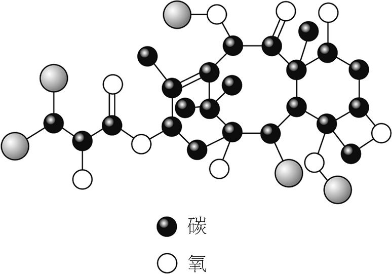
这对化学装配工来说是一个深刻改变。普里莫·莱维笔下的人物说明了合成有机化学家今天又是如何工作的：
你能想象到，其实更合理的办法是逐步向前推进，先将两块连接起来，再加上第三块，等等。这（比“颠热锅”）需要更多的耐心，但的确能领先一步。大多数时间我们都是这么做的。
类似这样的合成需要事先精心规划。最常用的规划法是美国的诺贝尔奖得主伊莱亚斯·J. 科里所设想的。他把这种办法称作“逆向合成分析”。顾名思义，就是从目标产物出发，回退分析，就像拆卸一个分子模型那样。每一步，你都选择拆掉一个你能看出怎样再装上的键，这样一来，在向前推进的过程中你就知道怎样进行每一步连接了。问题的诀窍在于要回退到起始原料，即碳骨架的一些片段，它们要么现成可用，要么就是能简单地用现成的化合物来合成。
在紫杉醇的例子中，有两个课题组“领先一步”。一个课题组在加利福尼亚的斯克里普斯研究所，由K. C.尼古拉奥领导；另一个课题组由罗伯特·霍尔顿领导，在佛罗里达州立大学。1994年，他们在相差不到一周时间内都给出了多步合成过程。要制造这样一个复杂的分子，并非只有唯一的办法，甚至也没有“最佳”的办法——研究者们在那之后又报告了几种其他的方案。但对于大规模生产来说，所有这些方案都太过复杂，无法实施。所以紫杉醇目前是用“半合成”的办法制造的，即先从紫杉的针状树叶中得到一种中间化合物，这种物质很像紫杉醇的半成品。使用这种物质，在实验室中就可以比较高效地完成合成，而且摘取树叶也不会杀死树木。
我在这里谈的都是有机分子的制造，但我还是应该强调，也有很多化学家并不基于碳原子来建造分子，而基于其他种类的元素。这些分子通常都很小，因为其他元素不能很稳定地形成像碳那样很大又很复杂的骨架。不过这条规则也有反例，图10中的分子就引人注目，这是一个主要由钼原子和氧原子组成的环。它是由德国比勒费尔德大学的阿希姆·缪勒课题组制成的，大小足有4纳米（水分子宽度的15倍，人类发丝宽度的数万分之一）。当金属与氧相结合时，它们一般并不会形成大分子，而是要么形成一些只包含寥寥几个原子的小分子，要么结晶形成矿石一样的固体（你要乐意也可以叫它“无穷大分子”）。化学家近来对这种无机 大分子很感兴趣，因为它们能够表现出不一般的、可能会有应用价值的特征，如磁性或者导电性。芯片里的晶体管之类的电子元件就是由无机材料制成的，主要材料是硅和硅的氧化物。当今复杂的分子烹饪术给我们列出了花样繁多的菜单，为分子尺度的电子科技定制元件也只是其中的小小一项。
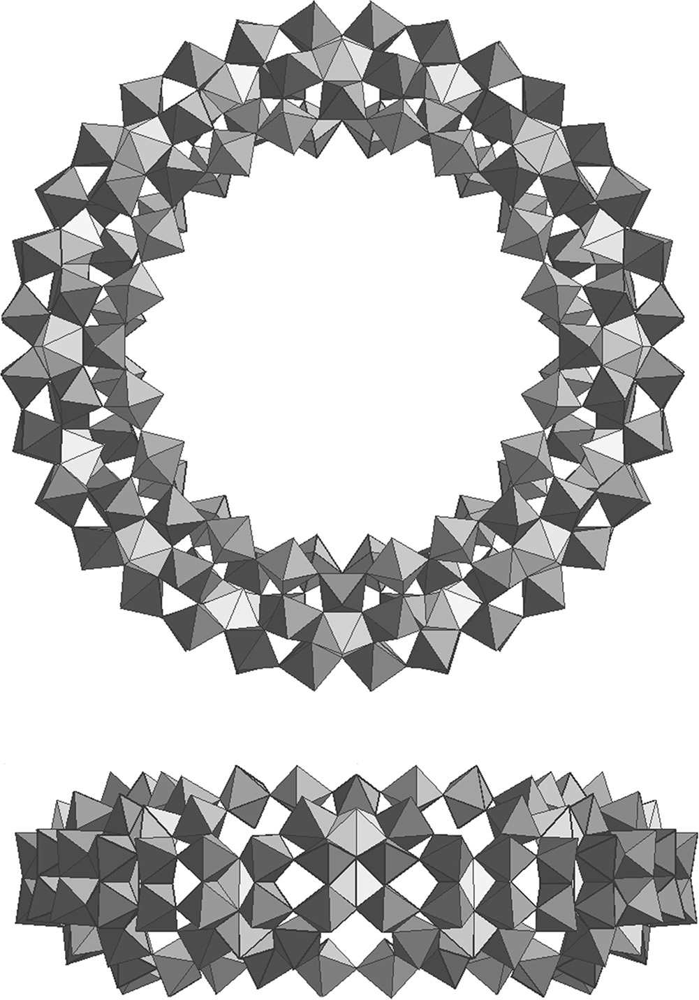